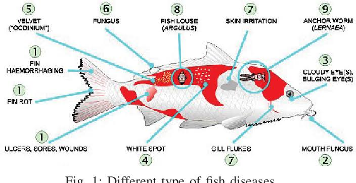

Topics Listing
Popular Topics

Diseases Management
Fish diseases may cause severe losses on fish farms through:reduced fish growth and production, increased feeding cost caused by lack of appetite and waste of uneaten feed, increased vulnerability to predation, increased susceptibility to low water quality and death of fish.
Learn MoreMarketing
Before you start your fish farm, you need to have a plan for how you will sell your fish. Research the market and identify potential buyers.
Learn More